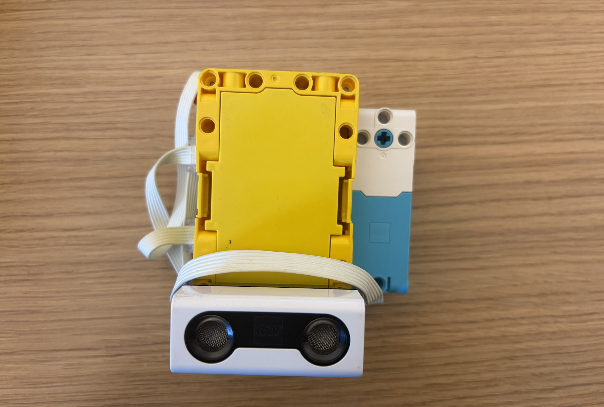
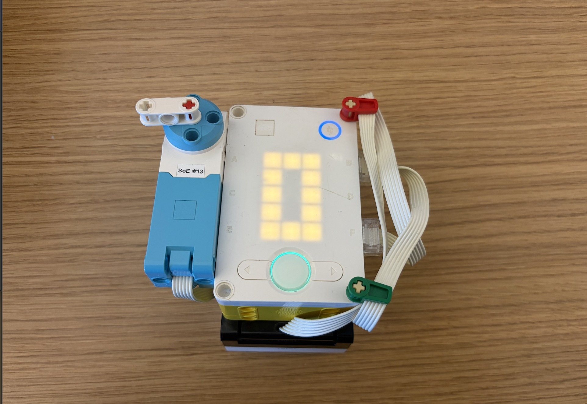

To set up this robot, I used an ultrasonic sensor to detect the distance to an object. Then, I coded the model so I could train it myself, and the hub stores the distance values. I then used the hub buttons to change the mode of the robot to inference mode. Then, it would use k-nearest neighbors to classify the distance. Once it classified the distance, then it would turn the motor to the corresponding direction to let the user know if the height was high or low.